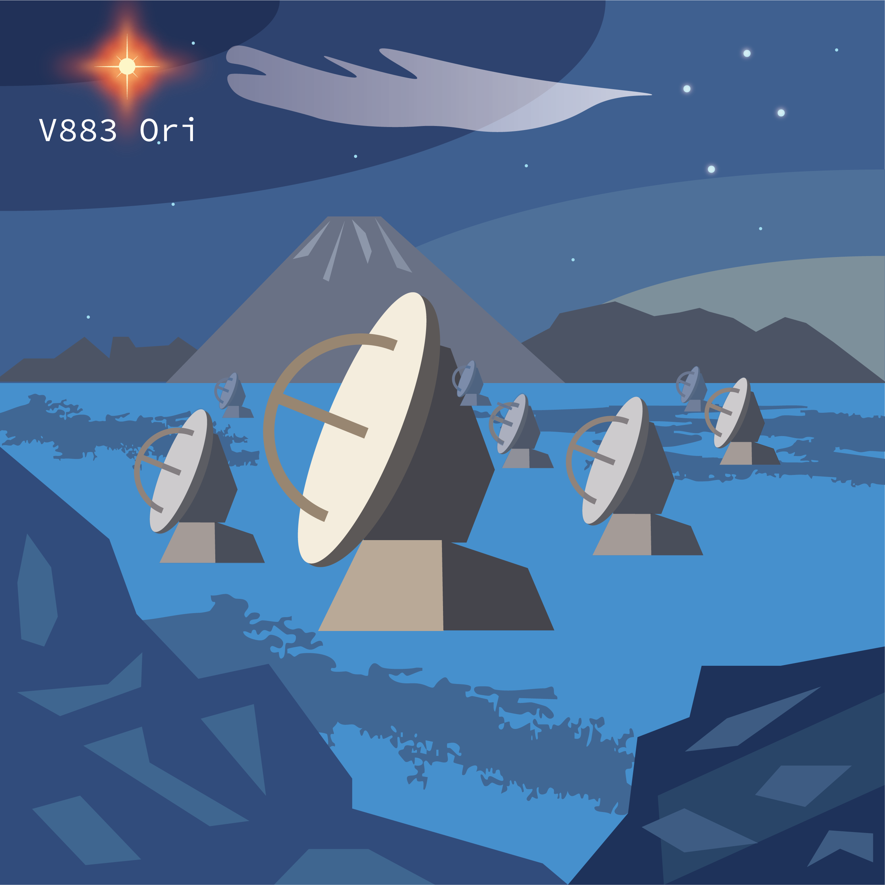
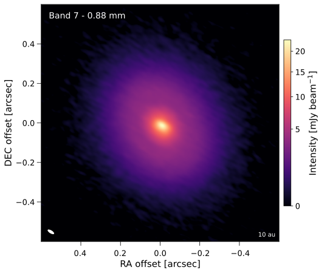
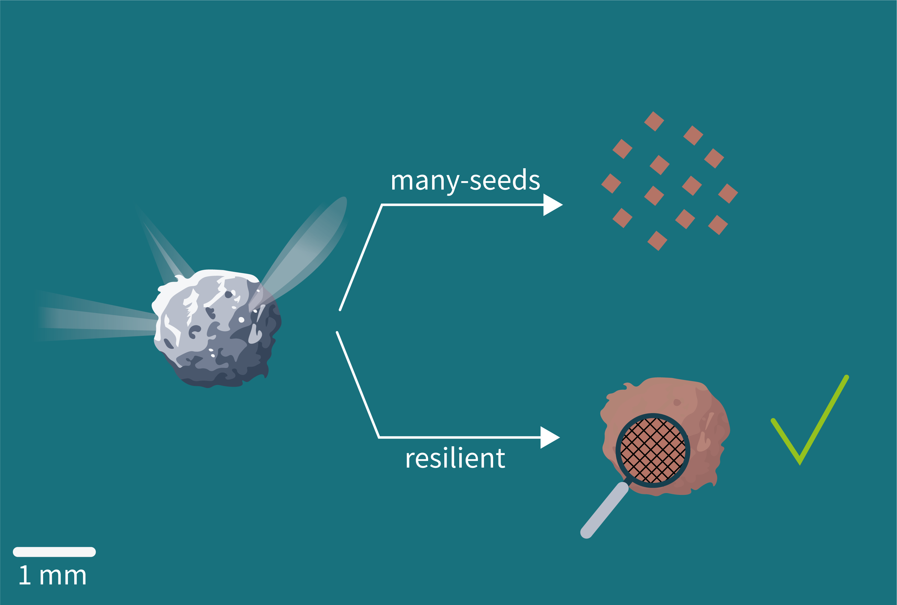

Context
Dust particles in protoplanetary discs consist in porous aggregates of micron-sized monomers. Outside the water iceline, water ice is deposited on the surface of individual monomers, binding them together, hence ensuring the cohesion of the entire aggregate. But, what happens if water ice sublimates? Does the whole aggregate fall apart?
Laboratory experiments have attempted to solve this question, but found opposite results, with icy pebbles either surviving the ice sublimation process (Spadaccia et al. 2022) or completely breaking apart back into monomers (Aumatell & Wurm 2011).
This process could have a huge impact for planet formation at the water iceline (see Sirono 2011). The purpose of this paper is to couple theory and observation to solve this mystery .
What's been done
We performed new multi-wavelength analysis of the outbursting disc V883 Ori. Thanks to the powerful accretion outburst, the water iceline is pushed beyond 80 au (Tobin et al. 2023), inside which water ice has undergone sublimation. This offers a unique opportunity to probe the impact of ice sublimation on the dust particle size.
We then performed 1D simulations to follow the coagulation, fragmentation and transport of dust particles in V883 Ori using the state-of-the-art code DustPy. We adapted the code and added an accretion outburst, which causes dust particles to survive (resilient model) or fall apart (many-seeds model) aligned with results from lab experiments.
We then compared the dust spectral index derived from our multi-wavelength observations with that obtained from our dust coagulation simulations.

Key results
We find that pebbles must survive the ice sublimation process.
We speculate that our findings also apply for icy pebbles drifting through the water iceline in quiescent discs. This may impact the formation pathway of dry planetesimals inside the water iceline.
